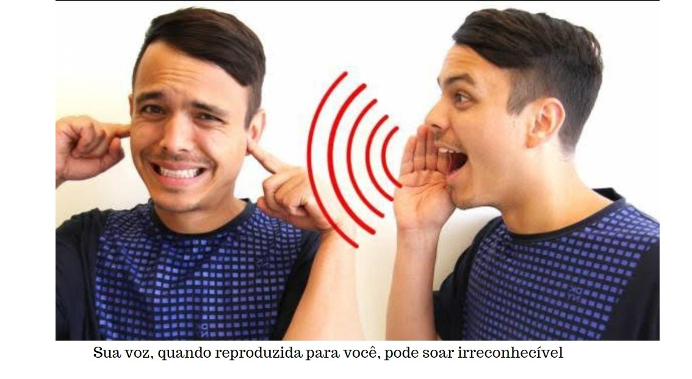

Por que odiamos o som de nossas próprias vozes?
Por que odiamos o som de nossas próprias vozes?
Como cirurgião especializado no tratamento de pacientes com problemas de voz, gravo rotineiramente a fala de meus pacientes. Para mim, essas gravações são incrivelmente valiosas. Eles me permitem rastrear pequenas mudanças em suas vozes de visita a visita, e isso ajuda a confirmar se a cirurgia ou a terapia de voz levaram a melhorias.
No entanto, estou surpreso com o quão difícil essas sessões podem ser para meus pacientes. Muitos ficam visivelmente desconfortáveis ao ouvir sua voz ser reproduzida para eles.
"Eu realmente pareço assim?" eles se perguntam, estremecendo.
(Sim, você tem.)
Alguns ficam tão inquietos que se recusam a ouvir a gravação – muito menos a repassar as mudanças sutis que quero destacar.
O desconforto que sentimos ao ouvir nossas vozes em gravações de áudio provavelmente se deve a uma mistura de fisiologia e psicologia.
Por um lado, o som de uma gravação de áudio é transmitido de forma diferente para o seu cérebro do que o som gerado quando você fala.
Ao ouvir uma gravação de sua voz, o som viaja pelo ar e chega aos seus ouvidos – o que é chamado de “condução aérea”. A energia sonora faz vibrar o tímpano e os pequenos ossos do ouvido. Esses ossos então transmitem as vibrações sonoras para a cóclea, que estimula os axônios nervosos que enviam o sinal auditivo ao cérebro.
No entanto, quando você fala, o som da sua voz chega ao ouvido interno de uma maneira diferente. Embora parte do som seja transmitido por condução aérea, grande parte do som é conduzido internamente diretamente pelos ossos do crânio. Quando você ouve sua própria voz ao falar, é devido a uma mistura de condução externa e interna, e a condução óssea interna parece aumentar as frequências mais baixas.
Por esse motivo, as pessoas geralmente percebem sua voz como mais profunda e rica quando falam. A voz gravada, em comparação, pode soar mais fina e aguda, o que muitos acham digno de nota.
Há uma segunda razão pela qual ouvir uma gravação de sua voz pode ser tão desconcertante. É realmente uma nova voz – uma que expõe uma diferença entre sua autopercepção e a realidade. Como sua voz é única e um componente importante da identidade própria, essa incompatibilidade pode ser chocante. De repente, você percebe que outras pessoas estão ouvindo outra coisa o tempo todo.
Embora possamos realmente soar mais como nossa voz gravada para os outros, acho que a razão pela qual tantos de nós se contorcem ao ouvi-la não é que a voz gravada seja necessariamente pior do que nossa voz percebida. Em vez disso, estamos simplesmente mais acostumados a nos ouvir soar de uma certa maneira.